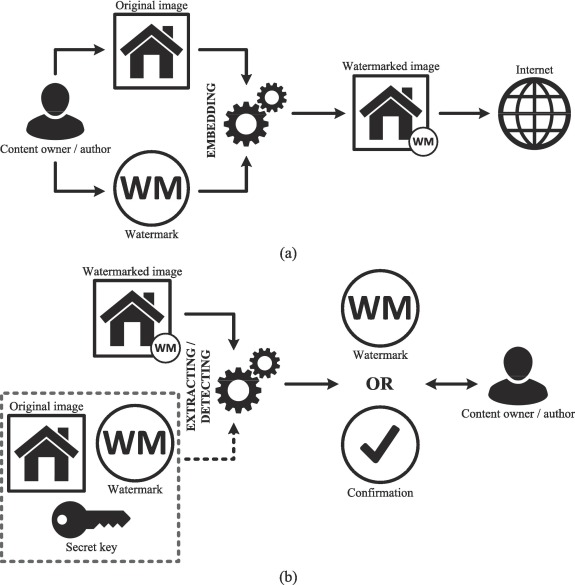

As AI-generated media becomes more realistic, identifying whether content is authentic or artificially created is increasingly difficult. One method used to address this challenge is watermarking—embedding signals into media to indicate its origin.
Watermarks can be visible or invisible. While they can help users identify AI-generated content, they are not foolproof. Understanding how watermarking works—and its limitations—is essential for responsible media verification.
What is Watermarking in AI Media?
Watermarking is a technique used to embed identifying information into digital media. In AI-generated content, watermarks can signal that an image, video, or audio file was created or modified using artificial intelligence.
These markers may be directly visible to viewers or hidden within the file’s structure, requiring specialized tools to detect.
Watermarks indicate origin, but their absence does not guarantee that content is authentic.
Visible Watermarks
Visible watermarks are marks, logos, or text placed directly on media to indicate ownership or origin. In AI-generated content, they may show that the media was created using a specific tool or platform.
Invisible Watermarks
Invisible watermarks are hidden signals embedded within the media file. They are not visible to the human eye but can be detected using specialized software or algorithms.
1. Watermarks on AI-Generated Images
Visible watermarks are designed to be immediately noticeable. They help viewers recognize that the media may not be authentic or has been generated using AI tools.

- Easy to identify without special tools
- Often include logos, text, or overlays
- Can be removed or cropped in some cases
2. How Invisible Watermarks Work
Invisible watermarks are embedded into the structure of the media itself, often by modifying pixel values or encoding hidden data that does not affect visual appearance.

- Not visible to the human eye
- Requires detection tools to identify
- Designed to persist even after minor edits
3. Detecting Invisible Watermarks
Specialized tools analyze media files to detect embedded watermark signals. These tools are often used by researchers, platforms, and investigators to verify content origin.
- Used in professional verification processes
- Can confirm if content was AI-generated
- Not always accessible to general users
Limitations of Watermarking
While watermarking can help identify AI-generated media, it has several limitations that affect its reliability.
- Visible watermarks can be cropped or removed
- Invisible watermarks may be lost after heavy editing or compression
- Not all AI tools apply watermarking
- Detection tools may not always recognize hidden watermarks
Why Watermarking Matters
Watermarking plays an important role in improving transparency in digital media. It provides a way to signal that content may have been generated or modified using AI technologies.
However, it should not be relied on as the only method of verification. Users must still analyze content critically and combine watermark detection with other verification techniques.
What We've Learned
Watermarking is a useful method for identifying AI-generated media, whether through visible marks or hidden signals embedded within files. It helps provide transparency and traceability in digital content.
However, watermarking is not a complete solution. It can be removed, altered, or absent entirely. Because of this, it should always be used alongside other verification methods such as metadata analysis, reverse image search, and critical evaluation of context.
A watermark can help identify AI-generated content—but its absence does not mean the media is real. Always verify beyond what is visible.